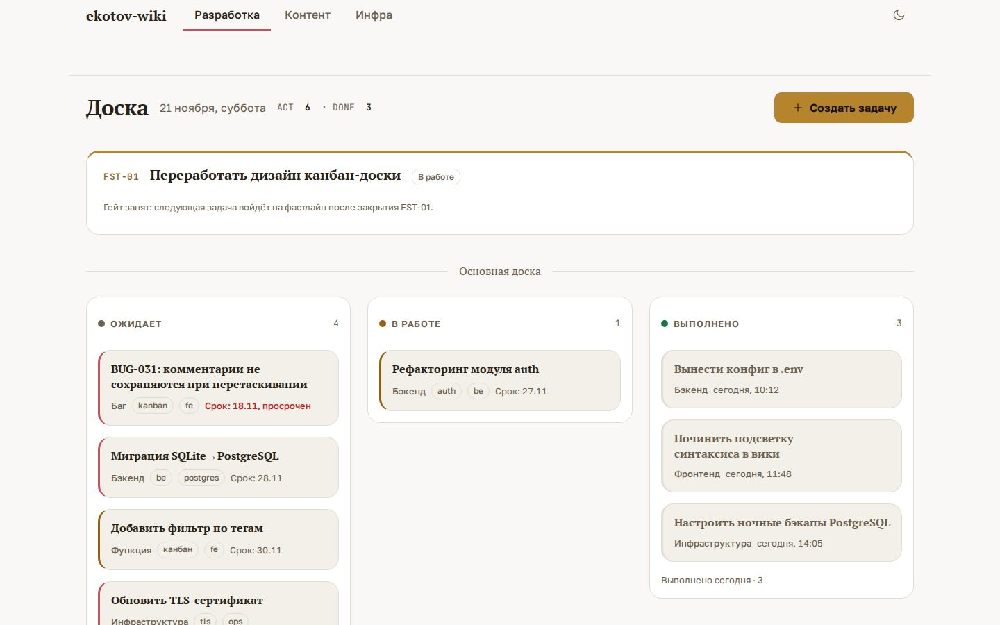
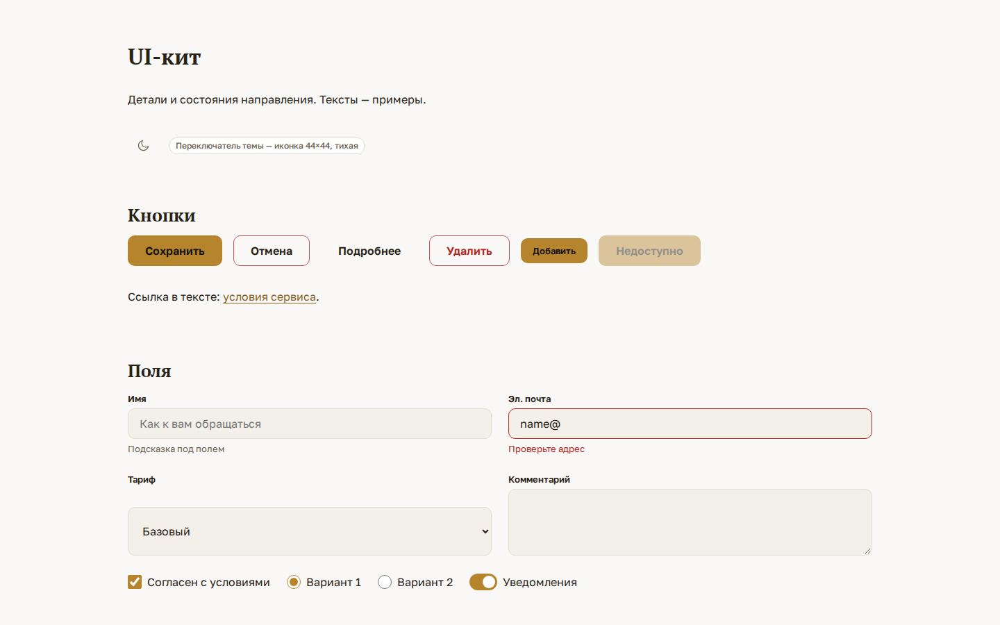
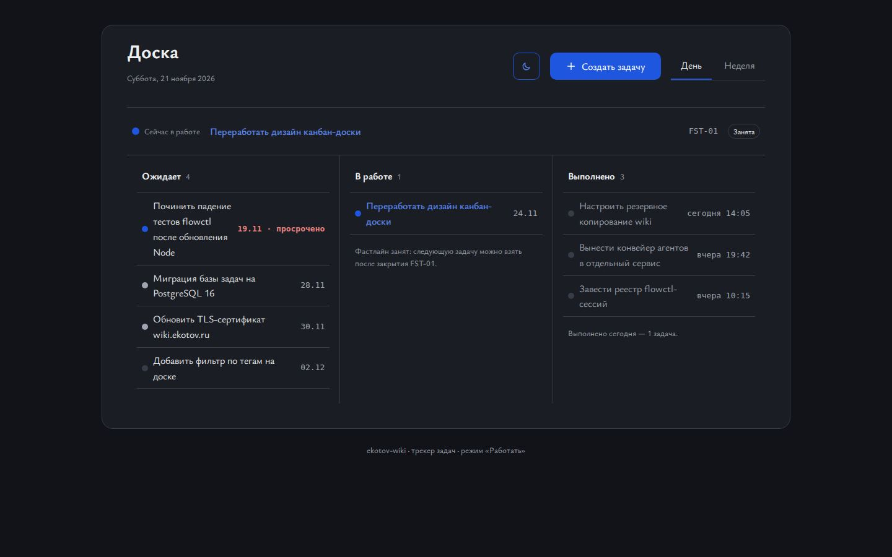
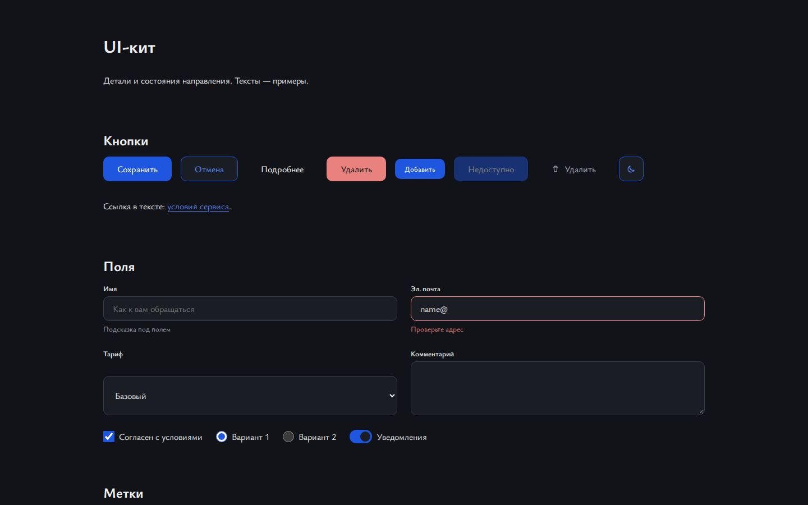
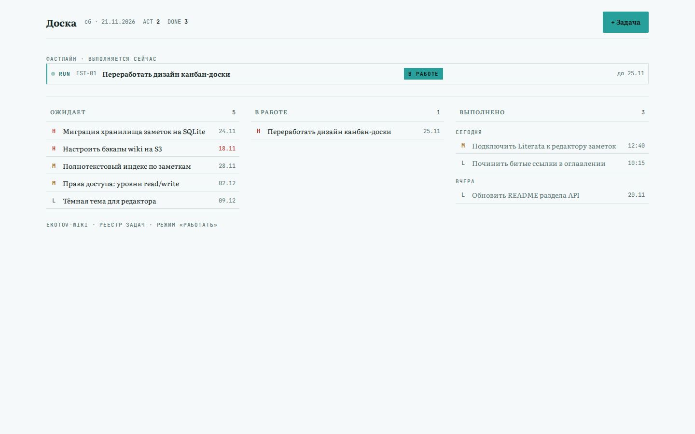
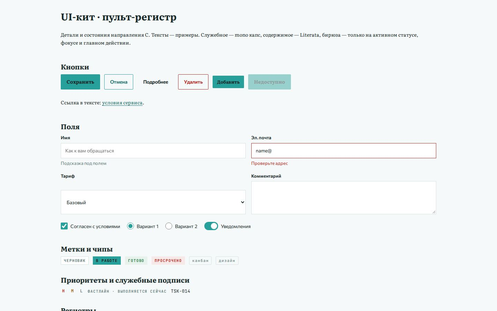

A · Доска и поток
✓ ошибок нет, предупреждений 3
| Палитра | Бордо и золото (тёмная) |
|---|---|
| Шрифты | PT Serif / Golos Text |
| Форма | round |
| Плотность | regular |
| Движение | subtle |
Идея
Канбан как «архив решений»: каждая задача — документ с весом (serif-заголовок), а доска — тёмный кабинет с бордовыми стенами, где золотом отмечено только то, что требует действия. Фастлайн — золотая линия штаба: одна задача, которой позволено светиться. От B отличается температурой и весом типографики, от C — округлостью и «документной» подачей вместо табличной.
Плюсы
- Мгновенно отличается от типовых синих канбанов; статус читается кромкой без чтения бейджей
- Serif-заголовки дают задачам вес — доска не выглядит «тудушкой»
- Тёплая тёмная тема спокойна при ежедневной работе
Минусы
- Бордо/золото требовательны к дисциплине: лишний золотой элемент рушит иерархию
- Serif в мелких подписях проигрывает гротеску — держать правило «serif только заголовки»
Тема светлая (data-theme="light"):

Тема светлая (data-theme="light"):

B · Расписание
✓ ошибок нет, предупреждений 0
| Палитра | Ледник (светлая) |
|---|---|
| Шрифты | Ysabeau / Ysabeau Office |
| Форма | round |
| Плотность | regular |
| Движение | still |
Идея
Трекер как «бумажное расписание дня»: белый лист, тонкие линейки-разделители вместо карточных теней, синий только там, где точка внимания (активная задача, приоритет, кнопка). Фастлайн подан как строка «сейчас в работе» в верхней части листа. Ни анимации, ни теней — состояние меняет цвет рамки и фона. От A — светлота и безтень, от C — воздух и округлость вместо плотной тёмной таблицы.
Плюсы
- Максимальная читаемость и скорость: ничего не движется, глаз мгновенно находит строку
- Светлый «бумажный» лист привычен для планирования дня, не утомляет
- Самый дешёвый в поддержке: минимум CSS-состояний
Минусы
- Статичность лишает «живости» — любители перетаскивания с анимацией сочтут сухим
- В тёмной теме «расписание на линейках» теряет наглядность сильнее, чем в светлой
Тема тёмная (data-theme="dark"):

Тема тёмная (data-theme="dark"):

C · Таблица-рабочий стол
✓ ошибок нет, предупреждений 3
| Палитра | Полночный бирюзовый (тёмная) |
|---|---|
| Шрифты | Literata / Literata |
| Форма | sharp |
| Плотность | compact |
| Движение | subtle |
Идея
Доска как «пульт диспетчера»: полночный экран, плотные колонки-регистры, Book Literata в заголовках задач придаёт строкам читаемость, а бирюзовый горит только на активном статусе и действии. Фастлайн — верхний регистр с LED-строкой «выполняется сейчас». От A — холодная точность и компактная плотность вместо тёплого документа, от B — тёмная плотность вместо светлого листа.
Плюсы
- Максимум задач на экран: компактная плотность показывает весь день без прокрутки
- Литературный Literata делает длинные заголовки читаемыми даже в 14px
- Тёмный «пульт» с бирюзовым активом выглядит как рабочий инструмент, а не витрина
Минусы
- Плотная тёмная таблица требует точной вёрстки: сбой ритма сразу виден
- Literata — спорный выбор для служебных подписей: держать mono для служебного
Тема светлая (data-theme="light"):

Тема светлая (data-theme="light"):
